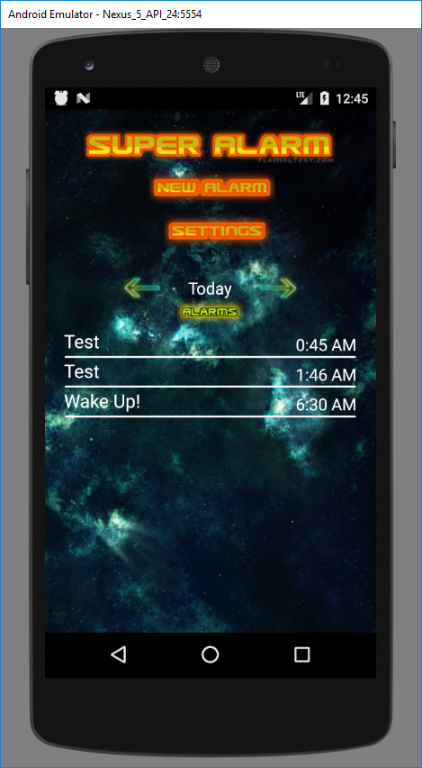
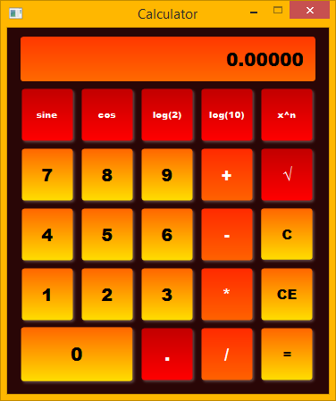
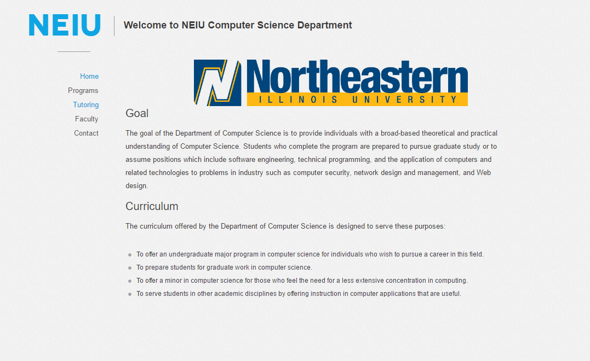

Alarm Clock - Android Studio/Java
 Home screen of the Alarm Clock application.Function: Work as a reminder for the user according to the selected time using the selected methods.
User Features:
- Allows user to keep multiple alarm times while being able to browse, add, and delete current or past alarms.
- Gives user the option to use custom ringtones, vibration settings, and volume.
- Features sounds that can be toggled on/off when navigating the application.
Software Features:
- Has a built-in SQLite Database that the application builds whem prompted to that is stored locally.
- In the local database, each item is stored in a "ListView" which can be modified by the user.
- Thru the Android-Manifest file, the application has permission to run while the phone is idle/closed.
- Uses an Abstract class to hold individual alarm properties.
- Buttons on the application come from custom made images that have special "on-click" triggers that activate sound in addition to navigational functionality.
- Application contents "shift" accordingly with the orientation of the device being used which is made possible by configuring the XML files.
Calculator - NetBeans/JavaFX
 The JavaFX Calculator ready for user input.Function: Work as a calculator providing basic/advanced mathematical functions to compute calculations for the user.
User Features:
- Allows user to do basic math with the calculator, with log functions, squares, and sine/cosine.
- User can either use a mouse, or a keyboard for input.
- Gives user the option to clear current input from the calculator, or to continue calculating with current input(ex. 2+2=4, +2 = 6).
- Features a color scheme as well as changing visuals when a button is pressed.
Software Features:
- Uses a CSS file for visual formats.
- Uses a GridPane to align and store buttons, and a TextField to display data.
- Uses "handling" methods to decide if user has input a number or a function and acts accordingly.
NEIU Computer Science Website Contest Entry - Notepad++/HTML5/CSS/JavaScript
 The JavaFX Calculator ready for user input.Function: Was a website to be intended for Computer Science students at NEIU. This was entered in a contest for the best "Visually Appealing" and functional NEIU CS Department website.
You can access it here, but keep in mind, it has no back-end functionality atm. It is stored in a friend's domain who helped me, and one other person construct the website as a group effort. Feel free to explore all of the pages!
User Features:
- Allows user to navigate across the website easily with a navigation menu on the left.
- Holds information regarding Computer Science concentrations and its requirements.
- Has a tutoring calendar page, a faculty info page, and a Contact page.
Software Features:
- Uses a Bootstrap front-end framework.
- Uses HTML5/CSS/JavaScript to hold basic front-end functionality including the calendar, and some forms.